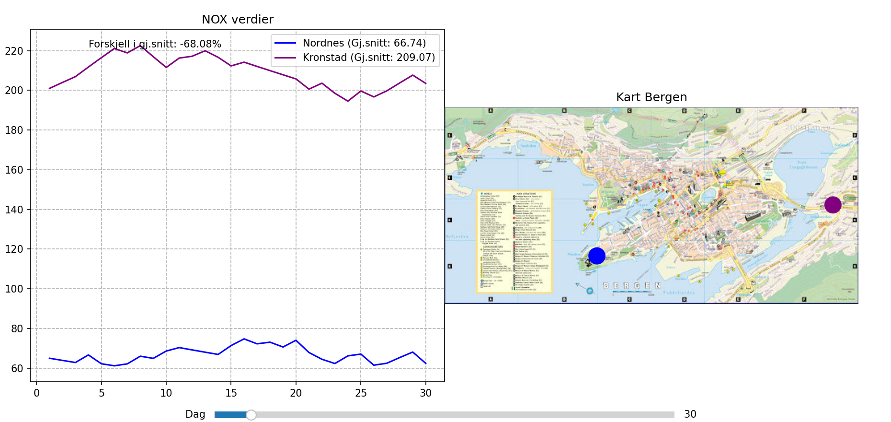
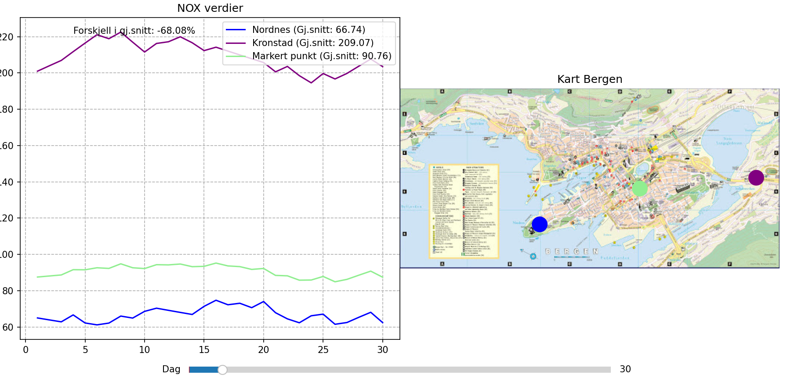
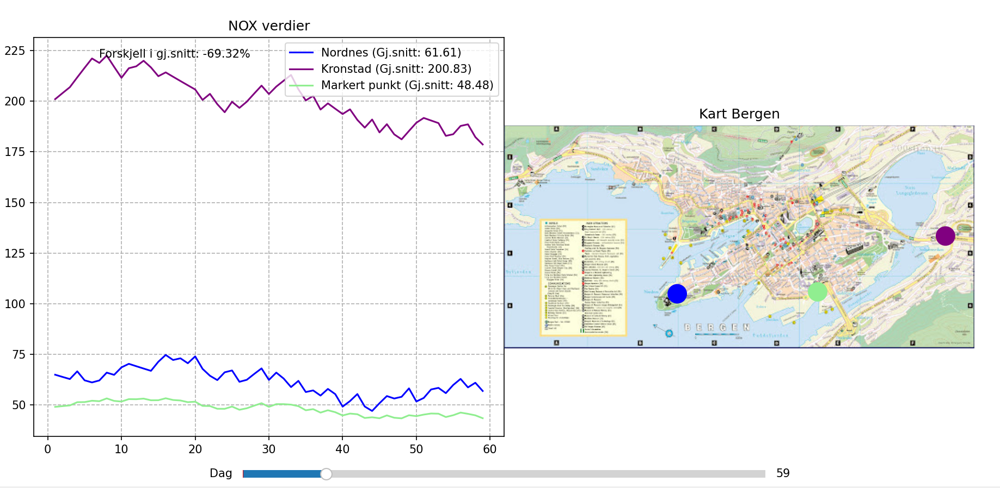

1. Når du laster inn programmet får du opp to forhåndsdefinerte punkter

2. Deretter velger du et punkt på kartet, som blir markert i grønt, og ser dataene for de
første 30 dagene

3. Punktet kan flyttes, og grafen oppdaterer seg

4. Videre brukes slideren for å demonstrere, her dag 59

5. Det sjekkes også her at alt blir oppdatert for dag 186